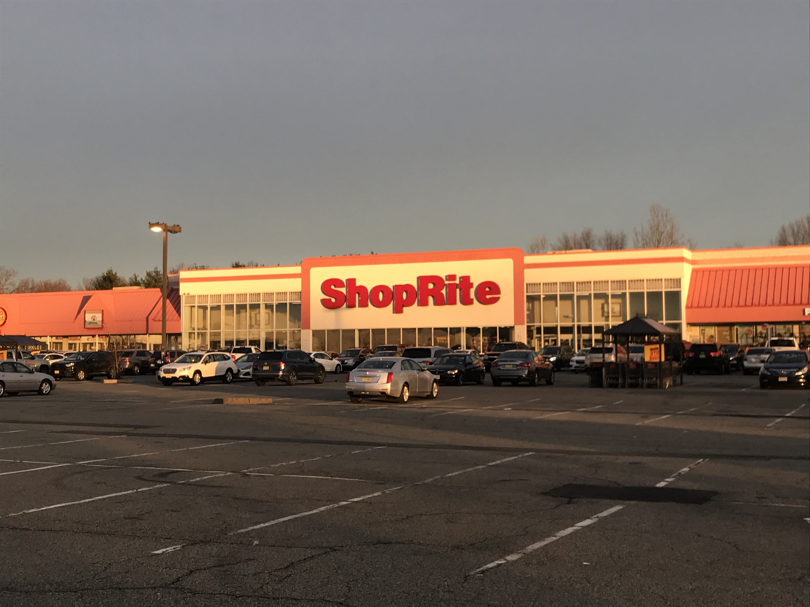
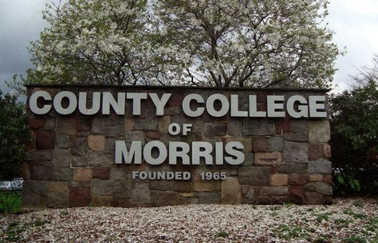
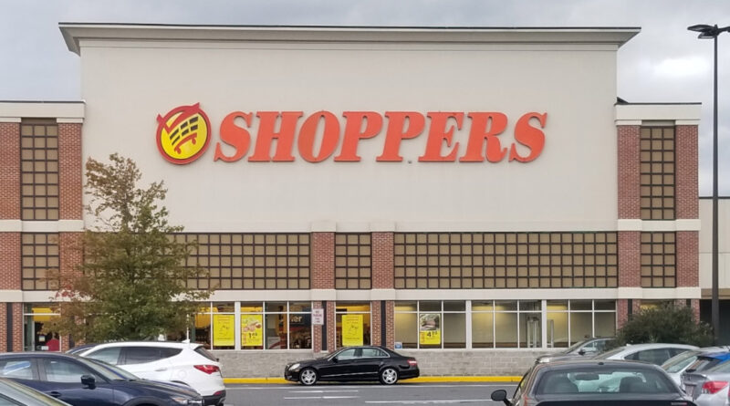
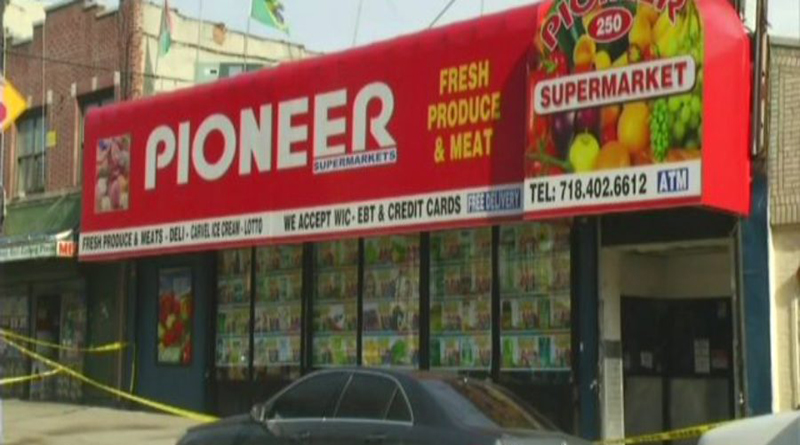

I must say today proudly that I chose the correct profession for me. It’s a great job! However, a "World Wide Company Covid layoff" in early 2020 (and work stoppage as nobody was hiring anyone then) eliminated my situation and forced me to regroup to retrain and stay sharp as I "rebranded" me for today. (I have learned website design and more.) I am extremely confident I will be back in this awesome profession again soon.
Without Graphic Design there for me, and to keep a roof over my head and food on my table, I took a local job in Parsippany, NJ as an Personal Online Shopper at ShopRite #355. I figured it's still retail, but instead of being in a corporate office advertising products in print form, I would actually be in store collecting those same items in the Supermarket. It was honest work and I was there for two successful years. (2020-2022)

Next, I had the opportunity to help my family (mom in nearby nursing home) so I moved to Washington, NJ in Warren County in North-West New Jersey as I continued this line of work. (Personal Online Shopper) This time it is with Walmart #2503 in Hackettstown, NJ which is in the Mansfield Township area. (2022-Present) I believe the secret of success in life is to be ready for opportunity when it comes. These experiences for sure got me better!
HOW ONLINE SHOPPING WORKS ENTER
In March of 2024, I won the 2nd Shift Associate of the Month Award at Walmart #2503 in Hackettstown, NJ as an Online Personal Shopper. I worked the 11am-8pm shift then and it was awarded to me by vote by the store managers.
It's important to note that I studied Fine Arts (1988-1990) at the County College of Morris (CCM) and Graphic Design (1990-1992) at Montclair State University, both in Northern NJ, to earn a AA Degree and BA Degree, respectively.

My resume journey took me to these three exciting places designing circulars and more. Please click square to see how I fared at each location:


THE FUTURE IS NOW! LET'S CHAT! EMAIL ME
I am able to fit right in and get along with others on a very productive level where the goals each place I worked at, their mission statemate of success, as how they defined it, were met by me with fantastic production and a very good work ethic. I was able to get along with others and became a strong asset to each respective operation. I can't wait to join your design team. Thank you for your time!